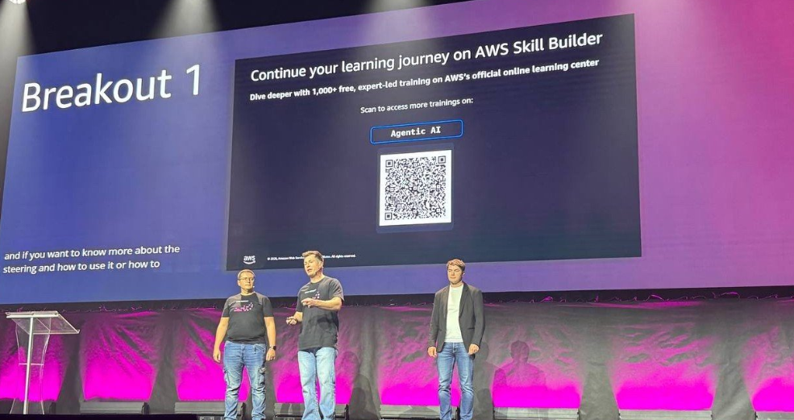
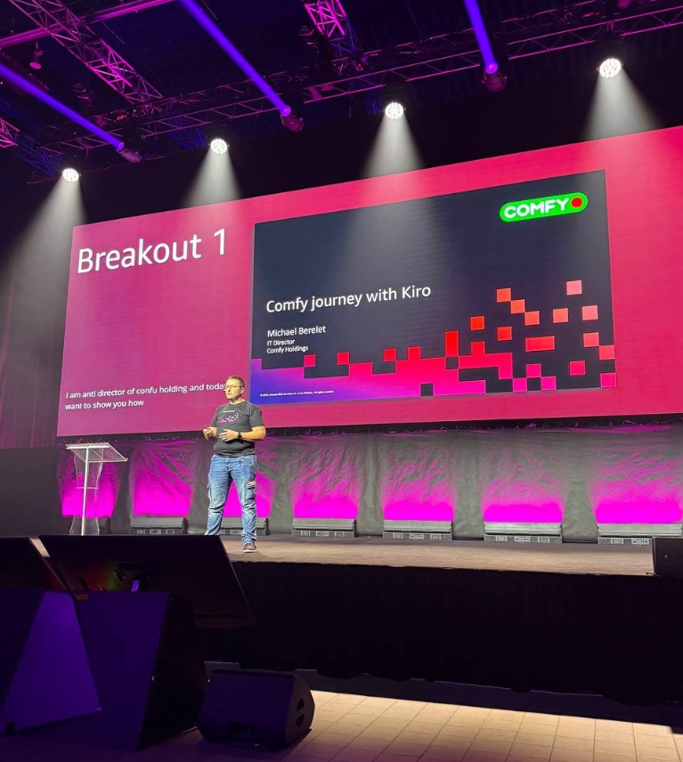

Type
Multi-agent platformorchestration, not "vibe coding"
A team of specialized AI agents that carries a task from a brief to a merged pull request — with clear roles, quality gates and a full audit trail. Built at Comfy, presented at AWS Summit Warsaw 2026.
AI Workflow is an orchestration approach where several specialized AI agents work as one team — with clear roles, shared context, quality gates and a full audit trail — carrying a task from a brief to a checked pull request.
Comfy's admin panel had grown for 10+ years. Every change went through the classic queue: business writes a request → waits for developers → teams are overloaded. Ideas piled up faster than they shipped.
After setup, it's a business user — not a developer — who runs the pipeline. Today the business team ships a large share of changes itself, without the dev bottleneck.
A graph state machine drives specialized AI agents through quality gates. Each stage passes named artifacts to the next; a failure returns the task to a specific node — not to the start.
PM, Business Analyst, Designer, Developer, QA and Performance — each backed by a review agent checking security, performance, API testing and business requirements.
A QA fail or a critical perf finding sends the task back to DEV only — localizing the blast radius instead of restarting.
User stories, wireframes, specs, code review — every artifact is saved and traceable, unlike chaotic "vibe coding".
Runs on Claude Code or Kiro CLI — choose the model per project, no lock-in.
Every artifact is created by one agent, then audited by a review agent for security, performance, API testing and business requirements.
A QA fail or a critical performance finding returns the task to DEV — not to the start of the pipeline.
Specs, wireframes, code reviews and test results are persisted per task and stay traceable.
Works like a familiar process — creates tickets, tracks statuses. Pipelines are built visually and configured per project.
After setup, business teams run the agents themselves — real self-service delivery, beyond the developer queue.
A 4-stage funnel for onboarding any project: interview → analysis → decomposition → confirmation, gated on a completeness checklist. Generates project.md and a dependency-ordered backlog.
Press release, user stories, a 14-section spec, wireframes, error scenarios, dev plan, test results, review reports — every stage leaves an auditable trace.
12+ pluggable best-practice skills (OWASP security, systematic debugging, API testing, performance audit…) injected into review agents per stage — rules live outside the code.
Multi-user roles (Owner/Editor/Viewer), visual pipeline editor, Jira & Confluence publishing, voice I/O, and an embedded web terminal for live agent sessions.


AI Workflow executes my own methodology — Needs-Driven Development — where a need sits at the center of the whole flow: need → requirements → spec → code. Read about the methodology →
What it is, who built it, and what it already delivers.
A Comfy product. Reference: DOU write-up (dou.ua/forums/topic/59758). Metrics are approximate, from the project repository and the talk.
Команда спеціалізованих AI-агентів, що веде задачу від постановки до merged pull request — з чіткими ролями, quality gates та повним audit trail. Створено в Comfy, представлено на AWS Summit Warsaw 2026.
AI Workflow — це orchestration-підхід, у якому декілька спеціалізованих AI-агентів працюють як єдина команда — з чіткими ролями, спільним контекстом, quality gates та повним audit trail — і ведуть задачу від постановки до перевіреного pull request.
Адмін-панель Comfy розвивалася понад 10 років. Будь-яка зміна йшла класичною чергою: бізнес формує запит → чекає розробників → команди перевантажені. Ідей накопичувалося більше, ніж встигали робити.
Після налаштування пайплайн запускає бізнес-користувач, а не розробник. Сьогодні бізнес-команда самостійно реалізує значну частину змін — без вузького місця у вигляді черги розробки.
Графова стейт-машина проводить спеціалізованих AI-агентів крізь гейти якості. Кожен етап передає іменовані артефакти далі; збій повертає задачу до конкретного вузла — не на початок.
PM, бізнес-аналітик, дизайнер, розробник, QA та Performance — і на кожному етапі окремий review-агент перевіряє security, performance, API testing та бізнес-вимоги.
Фейл QA чи критична знахідка perf повертають задачу лише до DEV — локалізуючи наслідки замість рестарту.
User stories, wireframes, специфікації, code review — кожен артефакт зберігається й простежується, на відміну від хаотичного «vibe coding».
Працює на Claude Code або Kiro CLI — модель обирається під проєкт, без lock-in.
Кожен артефакт створює один агент, потім review-агент аудитує його на security, performance, API testing та бізнес-вимоги.
Фейл QA чи критична знахідка performance повертає задачу до DEV — а не на початок пайплайну.
Специфікації, wireframes, code review та результати тестів зберігаються по кожній задачі й лишаються простежуваними.
Працює як звичний процес — створює тікети, відстежує статуси. Пайплайни збираються візуально й налаштовуються під проєкт.
Після налаштування бізнес-команди запускають агентів самі — справжня self-service доставка, поза чергою розробки.
4-етапна воронка онбордингу будь-якого проєкту: інтерв’ю → аналіз → декомпозиція → підтвердження, з gate на чеклисті повноти. Генерує project.md і беклог, упорядкований за залежностями.
Press release, user stories, спека на 14 секцій, wireframes, сценарії помилок, dev-план, результати тестів, review-звіти — кожен етап лишає аудитований слід.
12+ підключуваних best-practice skills (OWASP security, systematic debugging, API testing, performance audit…) інжектяться в review-агентів поетапно — правила живуть поза кодом.
Мультикористувацькі ролі (Owner/Editor/Viewer), візуальний редактор пайплайнів, публікація в Jira і Confluence, голосовий ввід/вивід і вбудований веб-термінал для живих сесій агентів.
AI Workflow виконує мою авторську методологію — Needs-Driven Development — де в центрі всього процесу стоїть потреба: потреба → вимоги → специфікація → код. Читати про методологію →
Що це, хто збудував і що воно вже дає.
Продукт Comfy. Джерело: розбір на DOU (dou.ua/forums/topic/59758). Метрики наближені — з репозиторію проєкту та доповіді.